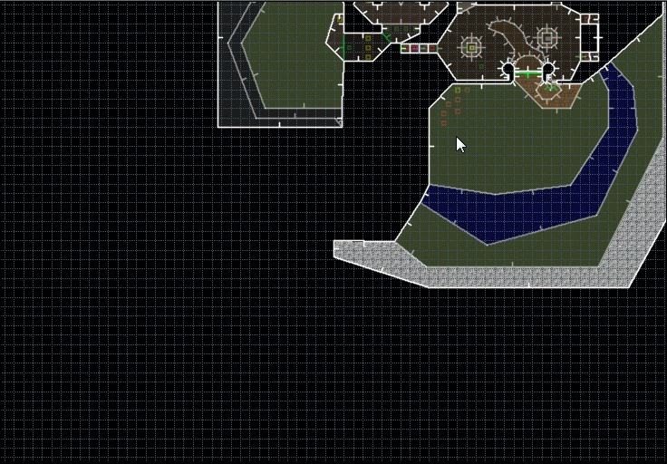

GZDB can synchronize the camera position between Classic and Visual modes. Unlike DB2, this doesn't require a Visual Mode Camera thing and it works both ways. Here's how it works:
Let's say you want to inspect that secret area in Visual mode:

Move the mouse cursor to the position where you want to appear in Visual mode, then go to Visual mode (default key is Q). You will appear there:
Then, let's say you've moved to an entirely different place without leaving Visual mode:
If you leave Visual mode now, the map will be centered at Visual camera's location:
If you don't like this behaviour, you can disable it in the Preferences window.